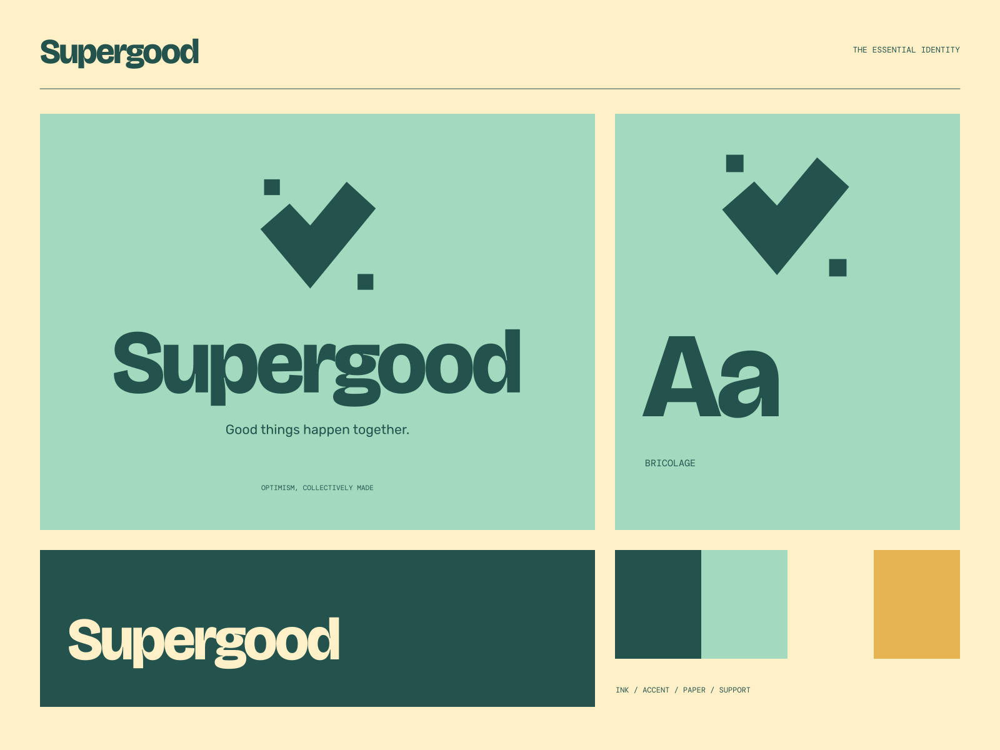

01
Give an idea a go
A welcoming place to turn a thought into something real.
GOOD PEOPLE / THINGS WORTH MAKING
Good things happen together. Good ideas are better together.
A coherent little world
Good ideas are better together. Good things happen together.
01
A welcoming place to turn a thought into something real.
02
Different people, useful skills, and good company.
03
A community built around doing, sharing, and showing up.

The point of view
Screenprinted checkerboards, chunky approval geometry, workshop-object illustrations, and warm heavy grotesk lettering. A vintage community language that feels sincere and active.